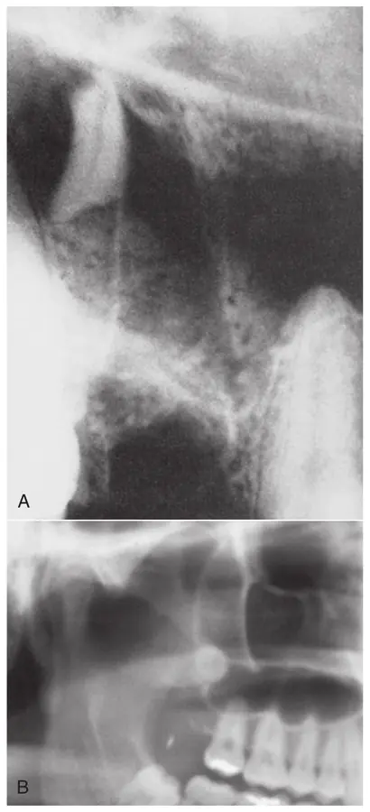

نسخه استخراجشده؛ ترجمه یا تأیید علمی انجام نشده است. وضعیت: captured
از همینجا شروع کنیم: بهترین درمان یک برهنگی احتمالی سینوس، پرهیز از خودِ مشکل با مشاهده و برنامهریزی دقیق درمان است.

و رادیوگرافی پیش از عمل چه چیزی را نشان میدهد؟ ارزیابی رادیوگرافی باکیفیت پیش از جراحی معمولاً حضور یا نبود این دو را آشکار میکند:
و چرا این دو؟ چون هر دو پتانسیل ایجاد ارتباط با سینوس یا شکستن کف استخوانی آنتروم حین برداشتن دندان را دارند.
و اگر اینها دیده شدند، جراحی چگونه تغییر میکند؟ ممکن است جراحی تغییر یابد تا دندان قطعهقطعه و هر ریشه جداگانه برداشته شود.
و اگر جسمی به سینوس رانده شد — سه راه بازیابی: شایعترین عوارض دندانی اعمال جراحی دهان که سینوس ماگزیلا را درگیر میکنند، رانده شدن دندان، ریشه، یا قطعات ابزار به داخل سینوس، یا ایجاد ارتباط میان حفرهی دهان و سینوس حین جراحی ماگزیلای خلفی هستند.
و حالا مهمترین اصل درمانی این درس: وقتی برهنگی و سوراخ شدن سینوس رخ میدهد، کمتهاجمیترین درمان در ابتدا اندیکاسیون دارد.
و برای سوراخ کوچک در سینوس سالم — پروتکل دقیق:
و یک قاعدهی امیدوارکننده: بیشتر بیمارانی که به این شیوه درمان میشوند، در نبود شواهد بیماری سینوسی پیشین، بدون حادثه ترمیم مییابند.
بیمار باید به مدت ۱۰ تا ۱۴ روز احتیاطهای بینی را رعایت کند — بهویژه این سه مورد:
و منطق مشترک هر سه: هر چیزی که اختلاف فشار میان بینی و دهان بسازد، لخته را از جا میکَنَد.
و دارو — سه دسته به مدت ۷ تا ۱۰ روز: بیمار روی یک آنتیبیوتیک که معمولاً پنیسیلین است، یک آنتیهیستامین، و یک ضداحتقان سیستمیک گذاشته میشود.
و هدف هرکدام: پیشگیری از عفونت، جمع کردن غشاهای مخاطی، و کم کردن ترشحات بینی و سینوس.
و پیگیری: بیمار پس از عمل در فواصل ۴۸ تا ۷۲ ساعت دیده میشود، و آموزش میبیند که اگر یک ارتباط دهانی-سینوسی بهصورت نشت هوا به دهان یا مایع به بینی آشکار شد، یا اگر علائم سینوزیت ماگزیلاری پدید آمد، بازگردد.
و حالا سوراخ بزرگ — وقتی لخته کافی نیست: اگر سوراخهای بزرگتری رخ دهند، ممکن است لازم باشد محل کشیدن با نوعی پیشروی فلپ پوشانده شود تا بستن اولیه برای پوشاندن دهانهی سینوس فراهم گردد.
و شایعترین عمل فلپ: بلند کردن یک فلپ باکال، آزاد کردن پریوست، و پیشروی فلپ برای پوشاندن محل کشیدن.
و سه اصل مهم پیشروی فلپ برای بستن — که اگر رعایت نشوند فلپ شکست میخورد:
و پس از بستن، بیمار باید همان احتیاطهای سینوسی پیشگفته را دنبال کند.